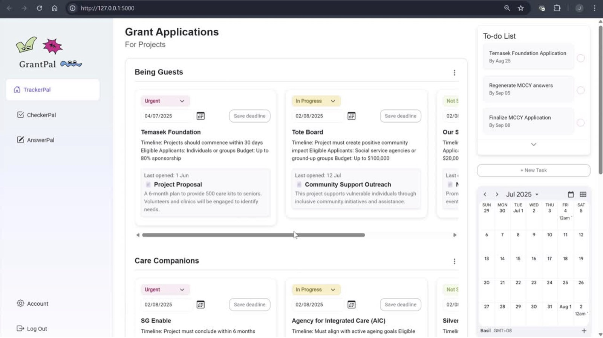
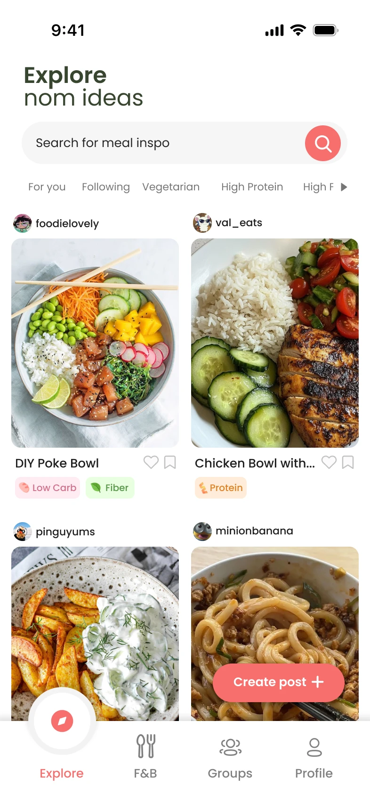
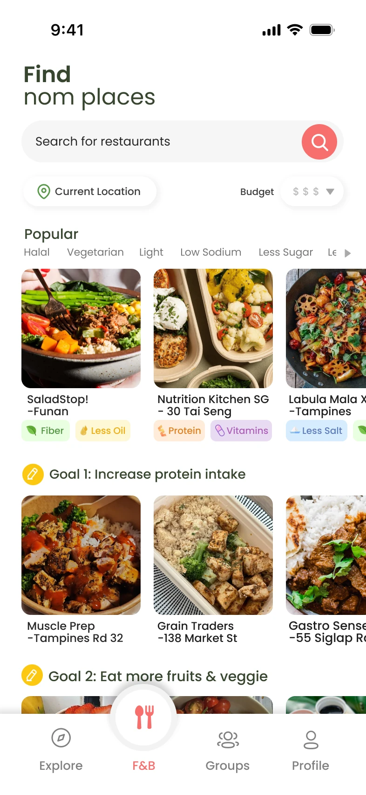
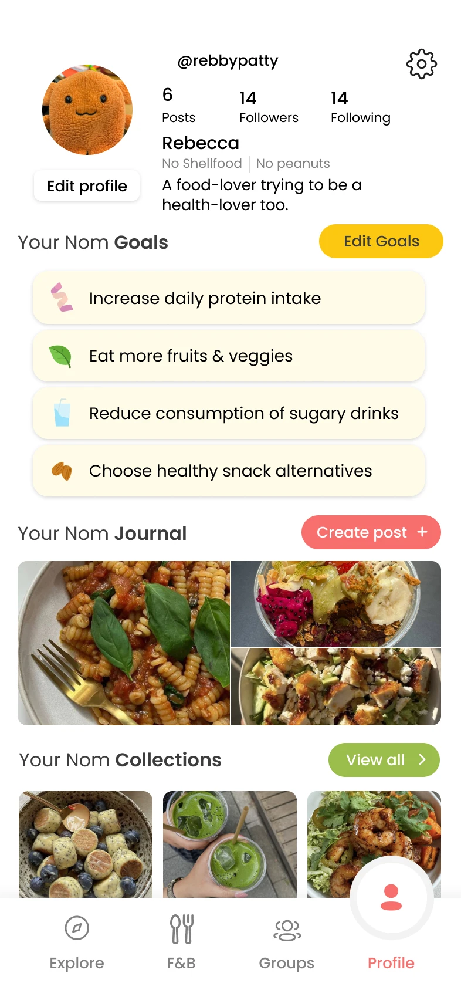
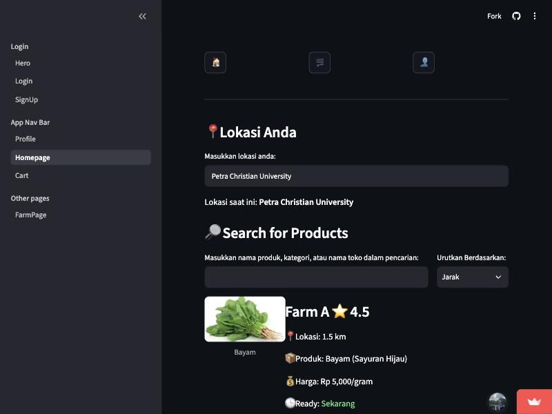

GrantPal
An AI assistant that helps a two-person social enterprise spend less time on grant admin.
- Role
- Tech lead · backend, AI modules and React frontend
- Built with
- React, Flask, OpenAI API, Google Calendar API

An AI assistant that helps a two-person social enterprise spend less time on grant admin.

A Figma plugin that checks designs against WCAG 2.2 AA and turns each issue into a note developers can act on.



A social eating app for busy working adults, shaped by interviews and three rounds of testing with 69 people in total.
Where AirPods Max trails · average sentiment, 0 to 1
Mining YouTube and Reddit comments to find where a premium product falls behind its rivals.

A marketplace that connects households in Surabaya with nearby farms, built after a site visit to Gunung Anyar.
22 Media · Mobile App Tech Team
Turned Figma designs into React Native components and interactive prototypes, and wrote the component guidelines and naming conventions the team used to keep design and code in sync.
Hegen · Strategy and Transformation
Started and delivered an AI-powered internal translation tool, and supported the company website redesign and an LMS rollout.
SUTD · STEAMunity Programme
Coached student teams from problem exploration to working prototype over four months, including an AWS-sponsored challenge.
RSM Stone Forest · Management Information Systems
Built a full-stack onboarding platform prototype on my own and automated billing reports for the audit team.
Singapore University of Technology and Design · B.Sc. Design & Artificial Intelligence, minor in Computer Science · 2023 – 2027 · exchange at Dankook University, Korea
Nanyang Polytechnic · Diploma in Business Informatics · 2018 – 2021
“Supported our design team by turning Figma visual models into functional, interactive prototypes.”
“An eagerness to take on responsibilities beyond the typical scope of an intern.”
Hi, I'm John. I'm in my final year of Design and Artificial Intelligence at SUTD, graduating in April 2027. Before that I did a diploma in Business Informatics at Nanyang Polytechnic, so I come to products from three sides: technology, business and design.
Across internships in software development, product development, project management and digital transformation, I've built and prototyped digital products, helped shape product and design decisions, and worked between technical and business teams to take ideas from concept to implementation. I like working where product design meets engineering: I can design a flow, then build it well enough to put in front of real users.
Away from the screen I play piano (Grade 8), climb with the SUTD Mountaineering Club, and help lead the youth group at my church.